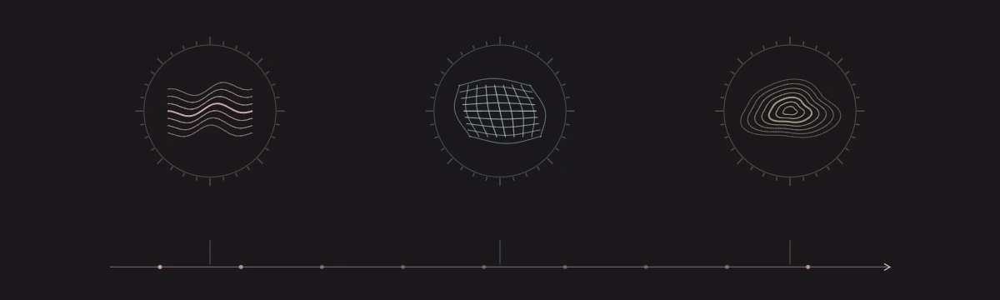

Records are not predictions
A forecast can be precise, even deterministic, without already being a record of a completed event.
The time pair / Amos Jay Maley
A direction without a master clock.
A clock tells us when. It does not, by itself, explain why an event can leave a consequence that cannot be made never to have happened. AASC separates these questions, then shows how different physical clocks can belong to one coherent account of the world.

The starting question
In ordinary quantum mechanics, time is supplied from outside the system being described. The equations tell us how a state changes as that background time advances.
In general relativity, elapsed time belongs to spacetime geometry, and that geometry is itself part of the changing physical world. When gravity and matter are treated together as a quantum system, what supplies the clock? In the Wheeler–DeWitt approach, the basic equation does not come with the usual outside clock. The challenge is to recover physical change and compare clocks inside the system.
There is also a different puzzle: many basic equations admit reversed histories, yet records and everyday processes have a direction. Why change has an arrow is not the same question as which clock measures it.
The shift is from assuming time as a primitive backdrop to establishing direction, physical clock use, and agreement between descriptions.
The conventional problem-of-time background is discussed by Claus Kiefer, Does time exist in quantum gravity?, and Kiefer and Peter, Time in quantum cosmology. The key mismatch is background time versus dynamical spacetime, not simply that different observers' clocks show different readings. The absence of an external time parameter does not by itself say that nothing happens.
The AASC claims explained here are the time pair's directionality and clock-use results, followed by WDW 10's bounded three-clock construction. The arrow paper does not replace statistical mechanics, and WDW 10 does not claim one global clock or an all-regime solution of every problem of time. The following chapters keep those distinctions explicit.
01 / The Arrow of Time as Standing Monotonicity
Turn a light on, then off. The room can look as it did before. But “the light was switched on” and “the light was never switched on” are still different histories.
The first time paper develops that distinction at a deeper level. Once something has been established and has a consequence that later events inherit, a new event cannot silently rewrite the original act as though it never happened.
This retained consequence supplies the direction. In the paper, its formal name is standing monotonicity. It is not the hand of a hidden universal clock, or simply another word for rising entropy.
The light is off. No switching event has been recorded.
An everyday analogy, not a model of entropy. The argument does not say that every physical record survives forever.
A forecast can be precise, even deterministic, without already being a record of a completed event.
Knowing which consequence depends on which event does not yet tell us how many seconds separate them.
The underlying order can leave some events incomparable. It does not force every event into one universal timeline.
Sections 13–15 construct a preorder on raw standing-bearing stages in a fixed scope. Mutually standing-equivalent stages are grouped together; their equivalence classes carry a partial order. The strict, non-invertible part of that order is the standing arrow. This is a consequence of the necessary Kernel roles, not an extra temporal primitive.
Lawful transformation, declared repair, changed scope, or loss of access must not be confused with erasing the fact of fixation as the same act. Thermodynamic, causal, record, psychological, and cosmological arrows are effective projections or refinements. They need not be identical or align globally. The paper does not derive numerical entropy production or a statistical-mechanical evolution law.
02 / The Physical Clock as a Quotient
A clock might count atomic transitions, follow a changing field, or use a sequence of records. What matters is the job it can actually do: give a meaningful readout, relate that readout to other events, and remain reliable within stated limits.
Showing seconds instead of milliseconds changes the presentation. Losing the readout connection changes whether the clock can timestamp the next event. Those are different kinds of change.
The second paper makes that distinction exact. For a fixed physical setting and a stated use, clock descriptions count as equivalent only when every permitted clock-use test agrees, including where a readout is defined.
Timestamping a detector event
2.400 seconds and 2400 milliseconds represent the same retained detector-event readout. The underlying clock use has not changed.
Illustrative counter and sample reading, following the atomic-clock example in section 5.6. No atomic dynamics are simulated.
Changing the display is not changing the physical clock. Changing what it can establish may be.
A quotient groups descriptions that make no difference to the declared physical use. The paper's clock object is the equivalence class of certified clock-use behavior, not a privileged variable or device name. Matching a handful of readings is not enough: the complete admitted probe family must agree in both definedness and value.
The physical setting, anchors, records, continuation, performance-relevant differences, and failure conditions remain explicit. A fixed clock-use quotient can be empty, contain one class, or contain genuinely different classes. The paper does not declare all clocks equivalent or choose a preferred one by convenience. A lost readout fails the timestamping use shown here; it does not mean that time or the physical source stops.
03 / The constructive step in WDW 10
The time pair establishes the distinction and the rules. WDW 10 takes a further step: on its specified gravity-and-scalar-matter construction, it builds three different local clock descriptions and the maps that relate them.
Qualitative spatial motifs, not numerical solutions of the Wheeler–DeWitt equations.
A matter-field profile
The scalar matter field has a value at each spatial location. Its whole local profile supplies the clock condition; it is not replaced by one average value.
What do the other physical records say at this matter-field profile?
Local limit: the matter-clock construction must retain its required direction and remain inside its certified neighborhood.
The scalar field across the local spatial region.
The spatial volume density relative to the specified reference geometry, not total cosmic volume.
The intrinsic scalar curvature across the spatial region, not a curve drawn in an outside space.
These are different physical descriptions, not one clock with three sets of labels.
The profiles are φ(·), νh*(h) = ⅓ log(dμh/dμh*), and R(3)(h). At the compact-hyperbolic anchor their normal lapse responses are ε*N, cN, and 4c(3 − Δ)N. The response inverses supply local profile slices with unique intersections and a common triple overlap. These are function-valued clock conditions, not spatial averages serving as scalar clocks.
The theorem retains WDW 9's Branch-A, compact-hyperbolic, metric–real-scalar, rank-one, no-spectator target and its transversely germified source lineage. Every clock has explicit local validity and first-failure conditions. The visual motifs illustrate the kind of quantity involved, not the paper's actual fields, solutions, or a geometric embedding.
04 / Agreement without a preferred clock
Imagine describing the same physical construction with the matter clock, then the local-volume clock, then the curvature clock. The descriptions are different. The transition must still preserve the physical state, records, and conditions for valid continuation.
Where all three descriptions overlap, the route must agree: going directly from matter to curvature must give the same physical account as going through local volume.
WDW 10 constructs these transitions and establishes that consistency. Its compatible local accounts can then be joined without elevating one clock to the status of “true time.”
Matter to curvature, two routes
The direct transition carries the common physical content from the matter description into the curvature description.
Same physical content and retained records
A schematic of the proved overlap relation, not a numerical test. Clock profiles remain distinct.
The payoff
The arrow concerns the consequence that an event leaves. A clock supplies a physical way to read and relate change. WDW 10 shows how three such descriptions can fit together on their shared, explicitly bounded domain.
The clock paper's section 17.3 states a compatibility criterion, not the existence of a clock atlas. WDW 10 supplies a constructed three-chart example with source-preserving transitions, triple-overlap coherence, and clock-neutral descent. The physical and enriched transitions are built before the common object is formed.
The direct transition agrees with the composed transition on the common overlap; the physical form, represented algebra, records, operator domains, continuation, first failures, and source markings are preserved. This does not identify different profiles, manufacture a global monotonic scalar clock, or extend the clockable domain beyond the inherited scalar-chart locus. It is not a full-superspace or all-regime quantum-gravity claim.
Read the research
The first two papers are the time pair. WDW 10 is the later constructive support, with its own gravity–quantum dependencies and more specific target.
Why an event can leave a consequence that a later event cannot silently make never to have happened. The paper identifies temporal direction with standing monotonicity, while distinguishing it from entropy, causality, memory, and the choice of a clock.
Fixed-scope standing preorder, partial order after standing equivalence, and strict non-invertible direction. Not a global linear time, an entropy-production calculation, or a primitive temporal flow.
What makes a variable, field, device, or record sequence a physical clock for a particular job. Equivalent descriptions are grouped by their complete usable behavior; genuine differences and breakdown conditions remain explicit.
Use-relative quotient of certified clock behavior and exhaustive pair/selection classification. The quotient may be empty, singleton, or physically plural. Local-atlas compatibility is a criterion, not an existence theorem.
Constructs three different local clocks from a matter-field profile, local volume density, and intrinsic spatial curvature. Their transitions preserve the shared physical account and agree on overlaps, allowing clock-neutral assembly without a master clock.
Retained Branch-A compact-hyperbolic metric-real-scalar rank-one no-spectator target. Three function-valued local clocks and clock-neutral descent; no global monotonic clock or clock-only extension beyond the inherited scalar-chart locus.
This tour explains the arguments in Amos Jay Maley's manuscripts. The interactive examples are explanatory illustrations, not independent proof verification or experimental confirmation. Exact hypotheses, dependencies, and limits are stated in the papers.